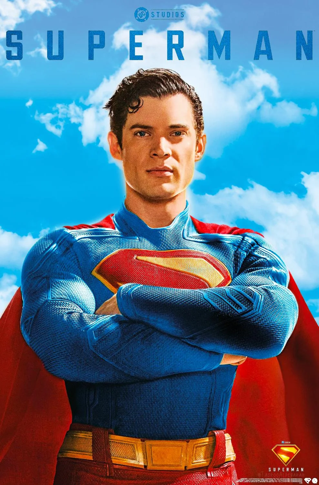
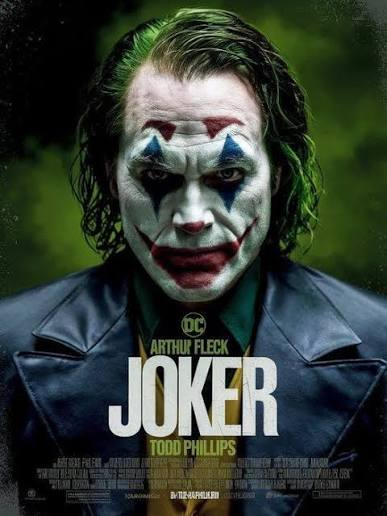
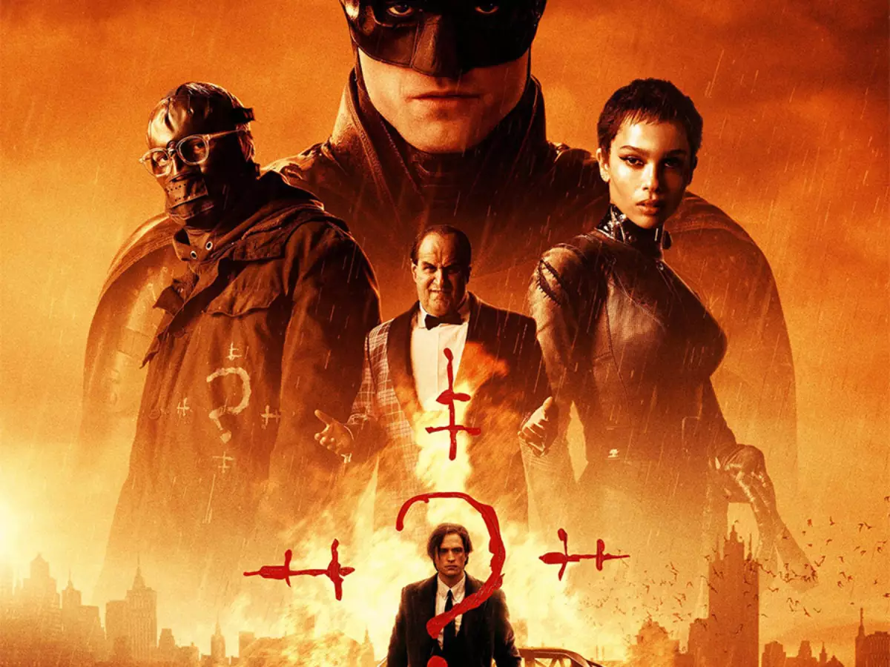
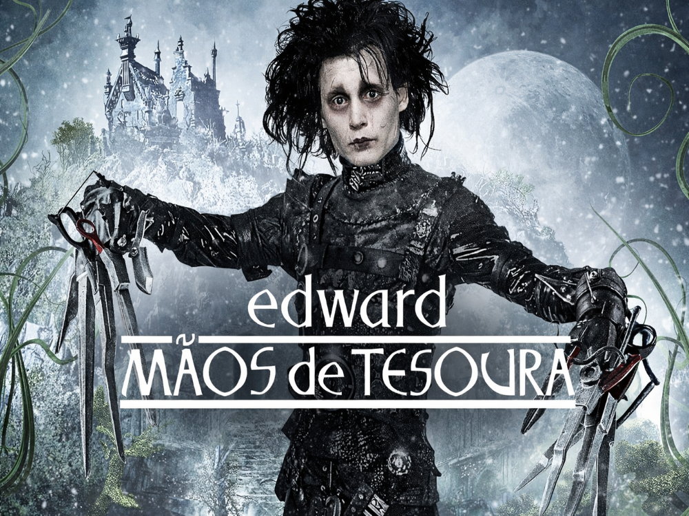
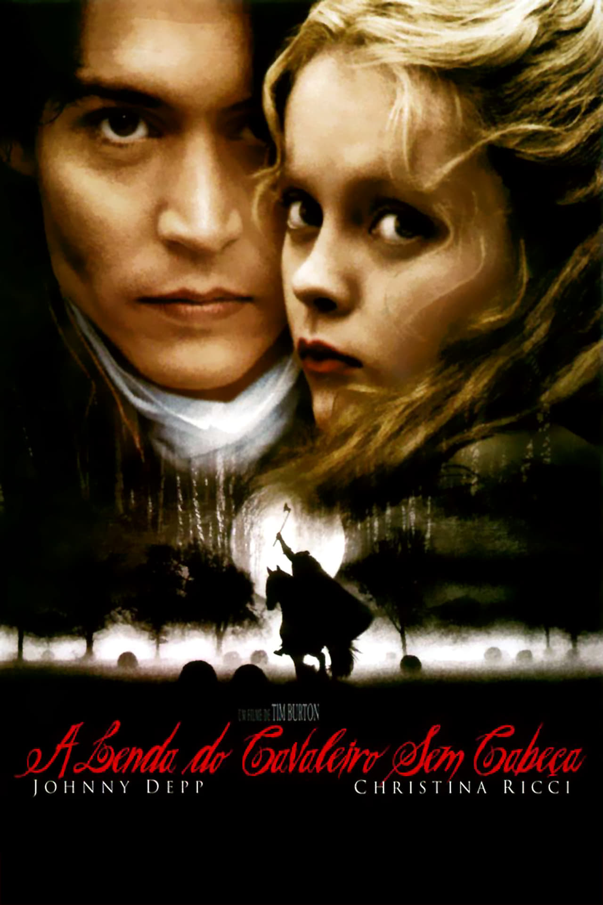
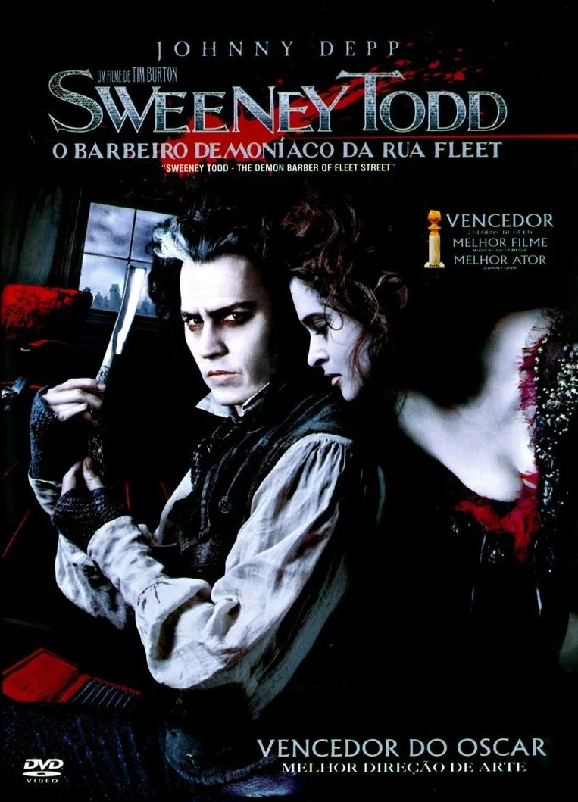
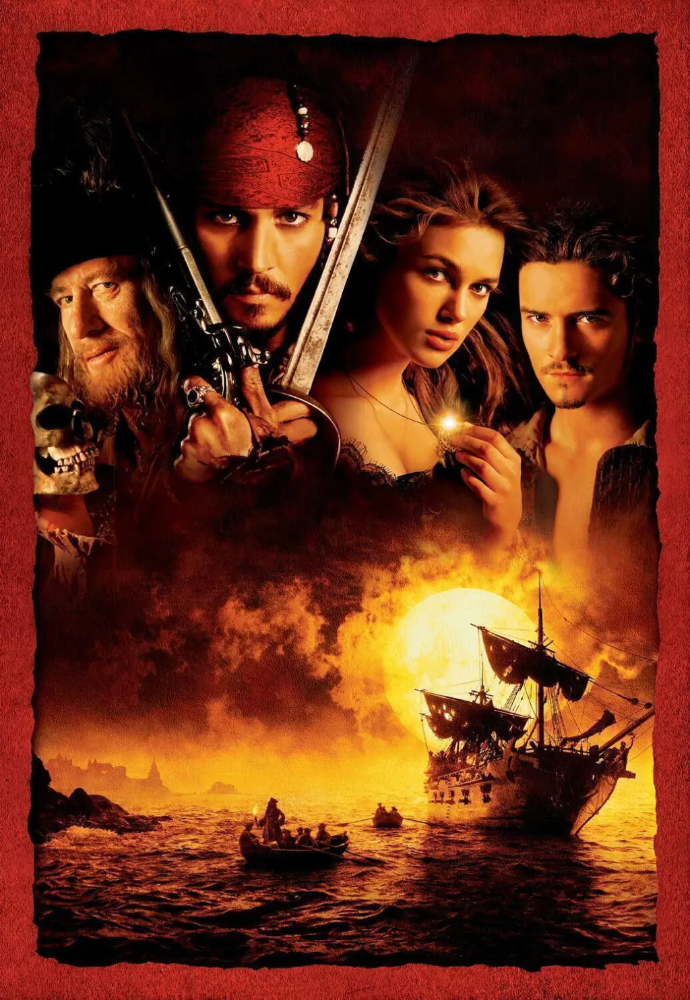
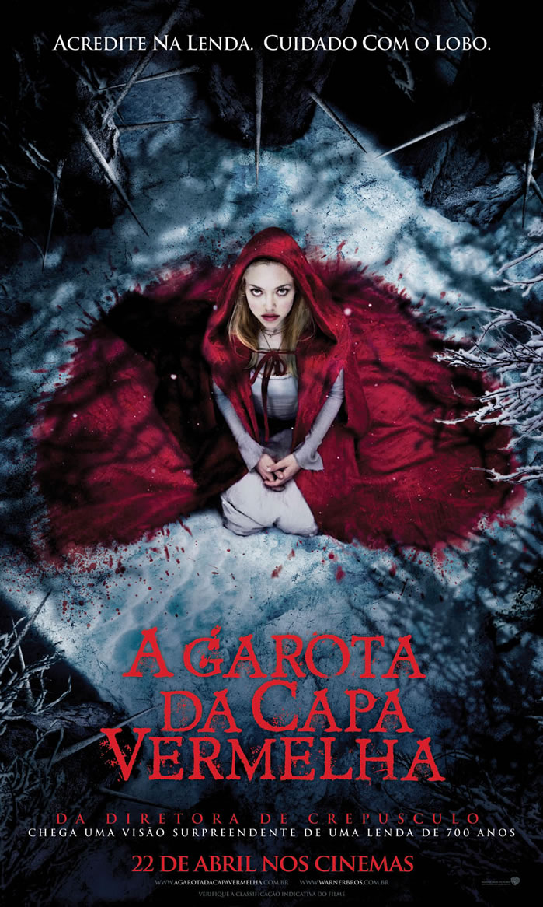

Em um mundo que questiona a bondade e a justiça, Superman precisa provar que a esperança e a humanidade ainda merecem ser protegidas. Enquanto enfrenta novos desafios e ameaças, o herói luta para encontrar seu lugar entre os humanos.

Arthur Fleck é um homem solitário que enfrenta dificuldades e rejeição em uma sociedade indiferente. Aos poucos, sua realidade se transforma em uma jornada sombria que dá origem ao icônico vilão Coringa.

Em seu segundo ano como vigilante de Gotham City, Batman investiga uma série de assassinatos cometidos por um misterioso criminoso. Ao desvendar segredos e corrupção, ele precisa enfrentar os perigos que ameaçam a cidade.

Edward é um jovem artificial criado por um inventor, mas que possui tesouras no lugar das mãos. Ao ser acolhido por uma família suburbana, ele descobre o amor e a amizade, enfrentando os desafios de ser diferente em um mundo que nem sempre o compreende.

O investigador Ichabod Crane é enviado a uma pequena vila para investigar uma série de misteriosos assassinatos atribuídos a um cavaleiro sem cabeça. Entre lendas sombrias e segredos ocultos, ele precisa descobrir a verdade por trás dos acontecimentos sobrenaturais.

Após anos de injustiça e sofrimento, Benjamin Barker retorna a Londres sob a identidade de Sweeney Todd, um barbeiro movido pela vingança. Ao se unir à Mrs. Lovett, ele inicia uma jornada sombria e sangrenta pelas ruas da cidade.

O pirata Jack Sparrow une forças com Will Turner para resgatar Elizabeth Swann, sequestrada pelo capitão Barbossa e sua tripulação amaldiçoada. Em uma aventura repleta de mistérios, batalhas e tesouros, eles enfrentam uma terrível maldição ligada ao lendário Pérola Negra.

Em uma vila medieval aterrorizada por um misterioso lobisomem, Valerie se vê envolvida em uma trama de segredos, medo e paixão. Enquanto os moradores tentam descobrir quem é a criatura, ela precisa desvendar a verdade antes que seja tarde demais.

Em uma galáxia dominada pelo Império, o jovem Luke Skywalker embarca em uma aventura ao lado de Obi-Wan Kenobi, Han Solo e Leia Organa. Juntos, eles enfrentam Darth Vader e lutam para restaurar a liberdade na galáxia.
Após muitos anos separados, Amanda e Dawson se reencontram e revivem um amor intenso que marcou suas juventudes. Unidos por lembranças e sentimentos nunca esquecidos, eles precisam enfrentar as escolhas do passado e descobrir se ainda existe uma chance para o amor.